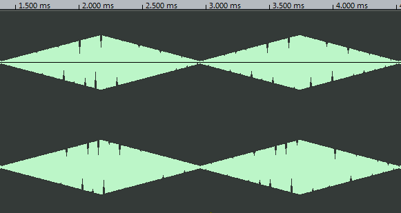
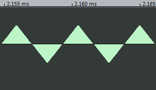
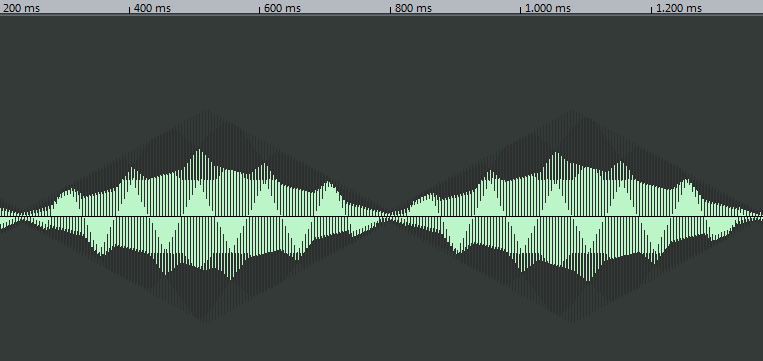
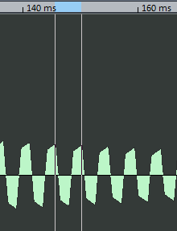

Die Prozentwerte sind bereits auf die Amplitude der Grundschwingungen normalisiert. Aufgrund der Messart, liegt die Ungenauigkeit bei 1 dB
Z der Grundschwingung: 10^(Amplitude /20)
Z normalisiert: 10^(- (AmplitudeGrundschwingung - AmplitudeOberwelle) /20
| Frequenz in Hz | Amplitude in dB | Prozentwert in % |
|---|---|---|
| 646 | 2 | 100 |
| 1981 | -16 | 12,58 |
| 3300 | -26 | 3,98 |
| 4630 | -31 | 2,2 |

| Frequenz in Hz | Amplitude in dB | Prozentwert in % |
|---|---|---|
| 646 | 1 | 100 |
| 1314 | -6 | 44,6 |
| 1918 | -8 | 35 |
| 2649 | -9 | 25,5 |
Nur bei der Rechteckschwingung gibt es eine Pulslänge, diese kann zwischen 0 und 100 Prozent der gesamten Periode betragen und bewirkt das Signal, wie bei folgenden Beispielen.
Rechteck P-Width 0.2

| Frequenz in Hz | Amplitude in dB | Prozentwert in % |
|---|---|---|
| 194 | 2 | 100 |
| 409 | -5 | 44,6 |
| 646 | -9 | 28 |
| 861 | -12 | 19,9 |
Rechteck P-Width 0.5

| Frequenz in Hz | Amplitude in dB | Prozentwert in % |
|---|---|---|
| 215 | 5 | 100 |
| 431 | 1 | 63 |
| 646 | -6 | 28 |
| 1098 | -11 | 15,8 |
Rechteck P-Width 0.9

| Frequenz in Hz | Amplitude in dB | Prozentwert in % |
|---|---|---|
| 258 | -15 | 100 |
| 495 | -16 | 89 |
| 732 | -15 | 100 |
| 969 | -15 | 100 |
Wir haben in Aufgabe 2 zunächst einige Probleme gehabt, da wir den falschen "out2" gelöscht hatten, was aber durch etwas Hilfe behoben worden konnte.
Danach haben wir ein wenig mit der "fine"-Einstellung experimentiert und sind der Meinung gewesen, dass ab einer Veränderung bei fine von ca. 0,05 eine deutliche Schwebung zu hören ist.
Hier der Ton dazu:

Wenn man das Bild dann vergrößert hat, konnte man deutlich die Mittenfrequenz erkennen.
Für unsere Mittenfrequenz haben wir hier 250 Hz ausgerechnet, indem wir die Länge über einer Periode grob abgemessen haben und dann den Kehrwert davon genommen haben. Dadurch sind die Werte vielleicht auch etwas ungenau. Für die Differenzfrequenz sind 2/3 Hz heraus gekommen.
Um die Dissonanz zu erzeugen haben wir die Werte von fine weiter verstellt und sind auf einen Wert von 0.14 gekommen, bei dem der Ton schon sehr anstrengend wurde. Wir waren etwas überrascht, dass die Differenz so klein ausfallen würde, aber ein Blick auf unsere Kurven zeigt, dass wir einen stark schwankenden Ton haben.
Hier zunächst der Ton:
Wenn man in dieses Bild zoomt, bekommt man dieses Ergebnis:
Auch hier haben wir wieder Längen gemessen und sind auf eine Mittenfrequenz von ebenfalls 250 Hz gekommen und haben für die Differenzfrequenz ca. 1,78 Hz heraus.Lösung
Charakter unseres Klangs:
Wir haben probiert unseren Klang so zu modifizieren, dass er in die Richtung eines Blechblasintruments gehen sollte. Letztlich fanden wir, dass unser Klang dem einer Orgel am nächsten kam.
Unser selbsterzeugter Klang
unsere Essemble-Struktur
Hüllkurve